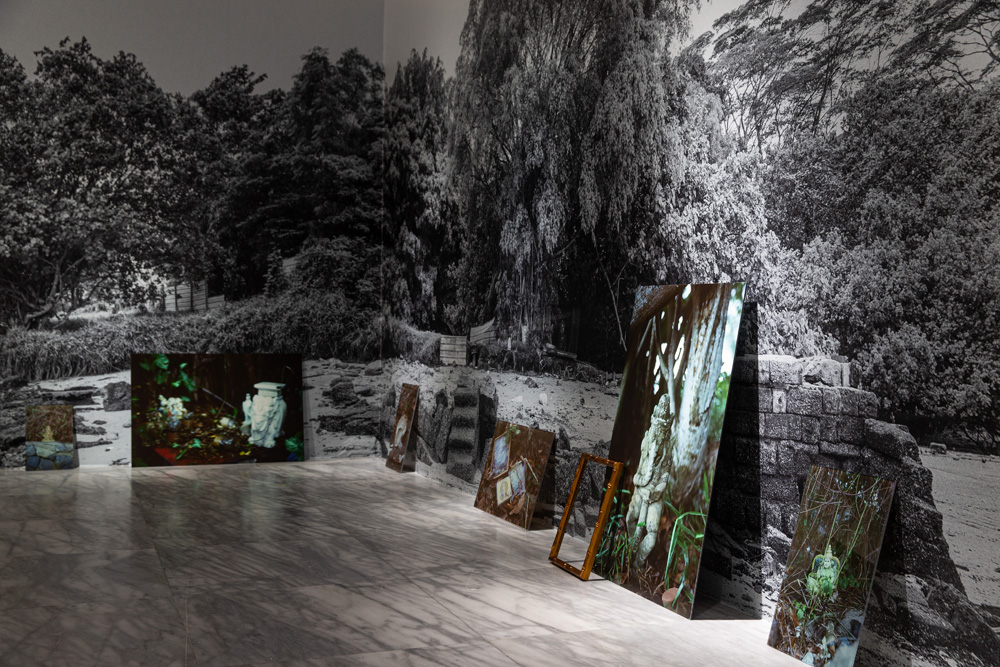

時間
2021/09/18 - 2021/12/19
地點
地下樓E、F展覽室
感性與機器看似是對立的概念，我們從對立出發來療癒自我：後資本主義時代的各個領域都面臨過度製造，資訊爆炸使得時間破碎，我們懸置主體的感受，失去自我與外界連結，甚至在危機來臨以前，就因為各種奇觀而焦慮，本展首先試圖回應這種日常化的主體危機。此外，我們的身體與機器的界線越來越模糊，這不只是工業製造以及社會規訓的結果，後資本主義時代的身體與數位環境已經演化出共生的狀態。感性與機器在幾位藝術家的作品中共存：霍恩的行為裝置以及繪畫機器仿效著人類各種感性活動，綠橘的文字詩則顯現生物基因和資訊社會中的編碼互相指涉的關係，陳呈毓的冥想機器在奇觀以及主體之間搖擺，而陳慧嶠，埃利亞松，亞康法，朱浩培與李長明的裝置作品，試圖在感性的沈浸式環境以及理性的敘事間取得平衡。在本展中，身體與機器感性之間的類比與對話，或許可以作為後疫情時代藝術與社會的互動的一註腳。透過體驗式的作品展出，我們回顧1970年代以來感性(affect)從身體藝術到多媒體裝置的藝術史路徑，延展到當代人類學式的環境探究，以及劇場及宗教常民文化。這八件行為以及數位科技的創作透過各種通道探索感性，其中七件是第一次在台北展出，兩件是全新製作。
觀眾主體與藝術的感性溝通經驗可以視為一種自我療癒。療癒在這裡並不是指回歸到初始，它可以是一個淨化的以及訓練感官的方式。我們將這個展覽想像成一種療癒機器的總體，在與各種媒介的溝通過程中，觀眾可以練習各種自我沈澱或釋放的儀式。